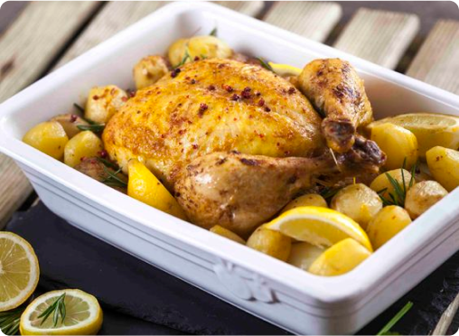

Unforgettable Dishes
with unforgettable stories
Discover our tavern's delightful cuisine: delicious, generous portions, affordable prices, made with love and care. Join us for an unforgettable dining experience filled with flavorful creations that will leave you satisfied and craving for more.

Galo no forno com batata
Cozido à Portuguesa
Carne de Porco à Alentejana